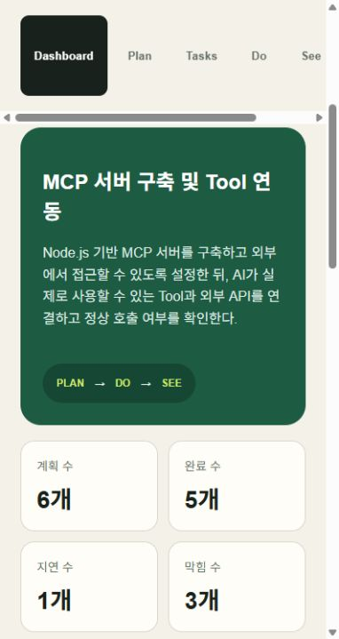
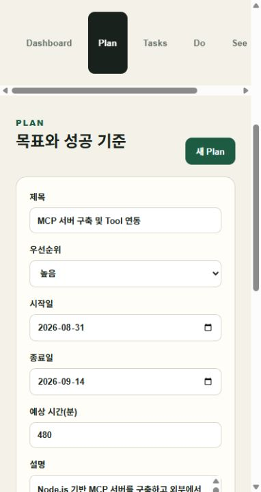
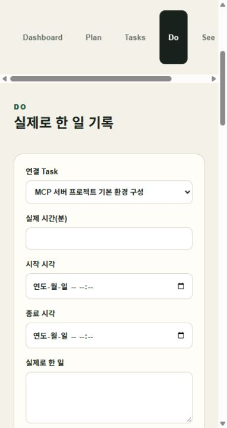
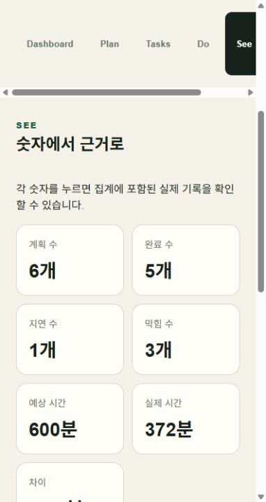
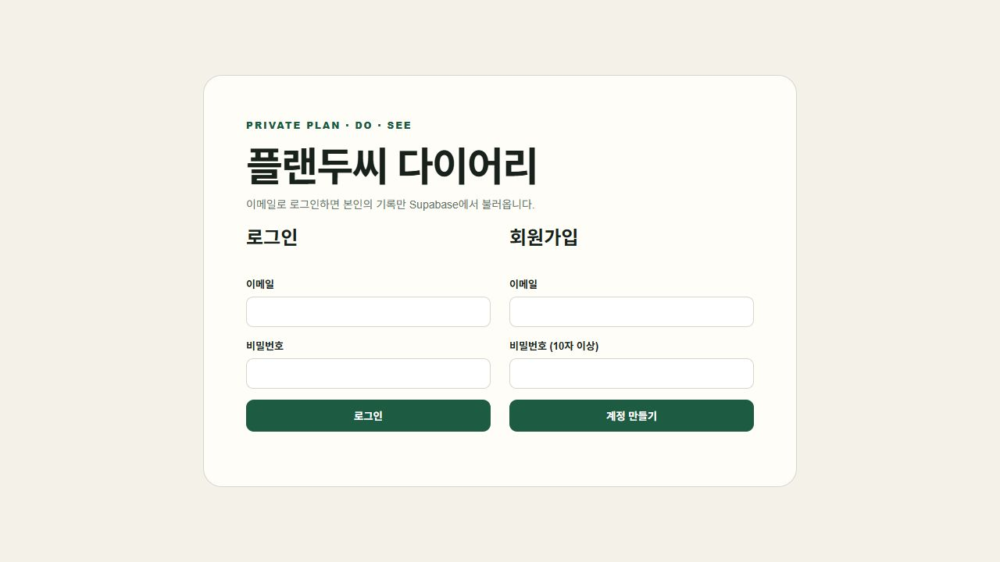
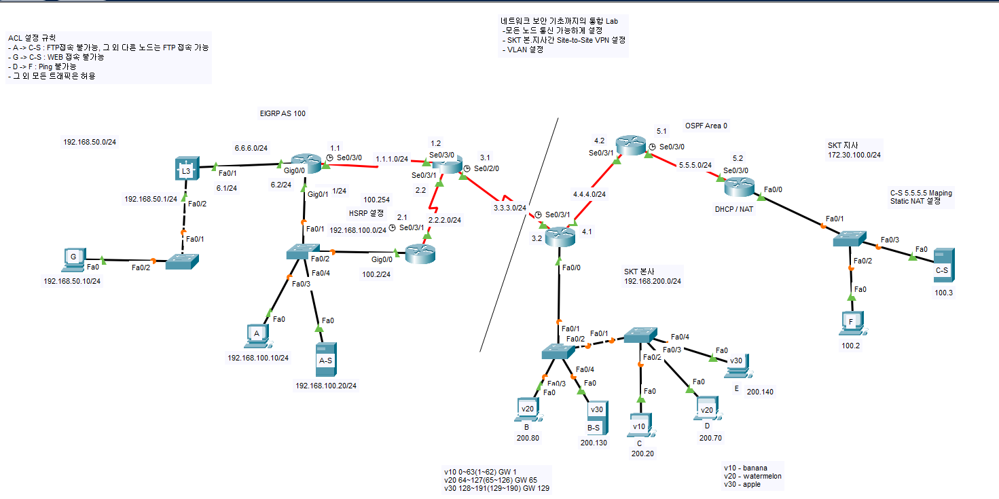

STRENGTH 01
문제 해결·학습 도움
2026.08.25 · 리추얼 기록
막힌 부분을 빠르게 도와 작업을 끝낼 수 있었다는 동료의 감사가 남아 있습니다.
- 산출물에서 볼 수 있는 모습
- 짤·카드 스튜디오의 빌드 경로 오류를 수정한 기록이 있습니다. AI와 함께 만든 산출물의 문제 해결 근거이며, 동료를 도운 장면과 같은 사건은 아닙니다.
SECURITY × BACKEND
Java와 Spring 기반 웹 서비스를 개발하며 인증, 서버, 데이터베이스와 관련된 문제를 분석해 왔습니다. 개발 경험을 바탕으로 웹 서비스의 보안 문제를 이해하고 분석하는 정보보안 직무를 목표로 합니다.
CORE ACTIVITIES 03
로그인·SSO·Cookie 및 권한 처리 흐름 분석
SSL/TLS 인증서 및 외부 API 통신 오류 분석
서버 로그와 SQL을 이용한 문제 원인 추적
실제 개발 경험을 기반으로 정리한 분석 근거
03 / CAPABILITIES
01 / TARGET
이 페이지는 정보보안 직무 채용 담당자에게 개발 경험과 보안 문제 해결 역량을 보여주기 위한 것입니다. 수행하지 않은 업무나 확인할 수 없는 성과 대신, 실제로 추적하고 판단한 과정에 집중합니다.
ABOUT ME / PORTFOLIO OUTLINE
기록에서 고른 강점과 앞으로 채워 갈 작업들
저는 함께하는 사람이 좋은 기분이 들게 하는 사람이 되고 싶은 석근욱입니다.
군 정보통신체계 운영과 공공기관 웹 개발 경험을 바탕으로 보안 인프라·개발 직무를 준비하고 있습니다.
저는 웹 시스템의 인증·데이터 흐름을 이해하고, 운영 환경의 문제를 해결하는 보안 인프라·개발 업무에 지원합니다. 육군 정보통신 하사로 C4I 서버와 정보통신 장비를 운영·유지보수하며 장애 대응과 계정·접근권한 관리를 수행했고, 신라시스템에서는 공공기관 웹 시스템의 기능 개선과 오류 수정을 담당했습니다.
의왕시 통합예약시스템에서는 도서관 시스템으로 이어지는 JWT 로그인 연계와 강좌 현황 연계 기능을 개발하고 추첨 로직 오류를 수정했습니다. 기존 코드와 외부 시스템의 연결 방식을 살펴보고, 수정한 기능이 개발 서버에서 정상 동작하는지 확인했습니다. 이 과정에서 서비스의 안정성을 위해서는 기능 구현과 함께 인증과 시스템 간 연계 흐름을 이해해야 한다는 점을 배웠습니다.
현재는 AI 보안·인프라 교육에서 Linux, 네트워크, 방화벽·VPN, 탐지와 모니터링을 학습하고 있습니다. 서버·장비 운영 경험에 웹 개발 경험과 보안 지식을 더해, 서비스 구조를 이해하고 변경의 영향을 살피는 구성원으로 기여하겠습니다.
저는 다른 사람의 의견을 받아들여 일하는 방식을 바꿔 왔습니다. 2023년 군 복무 당시에는 업무를 처리한 내용을 충분히 기록하지 않았습니다. 반장이 업무를 기록해 보라고 조언했고, 저는 이를 받아들여 수행한 내용을 남기는 방식으로 행동을 바꿨습니다.
이러한 태도는 개인 프로젝트 직관노트에서도 이어졌습니다. 야구 관람 기록 서비스를 본 친구가 첫 화면의 로그인 부담과 구장·응원팀의 반복 입력이 불편하다는 의견을 줬습니다. 저는 이를 첫 진입과 기록 작성 과정의 문제로 나누고, 소개 화면과 로그인 없는 샘플 체험, 구장 선택과 기타 직접 입력, 계정별 응원팀 저장 기능을 요청했습니다.
기존 데이터를 보존한다는 조건도 정했으며, 구현과 배포·기술 검증은 AI가 수행했습니다. 요청한 기능은 공개 서비스에 반영됐습니다. 조언에 동의하는 데서 멈추지 않고 제 업무 방식과 서비스 요구사항을 바꾼 경험을 바탕으로, 동료와 사용자의 의견을 구체적인 개선 행동으로 연결하겠습니다.
제 강점은 원하는 결론이 나오더라도 근거가 충분한지 다시 확인하는 태도입니다. 공개자료 연구 과제에서 병사의 휴대전화 사용 허용과 외부 소통이 스트레스 감소로 이어지는지 검토했습니다. 저는 연구 가설을 선택하고, AI가 정리한 원자료와 결과표를 보며 정책에 대한 긍정적인 인식이 실제 스트레스 감소를 입증하는지 확인했습니다.
검토 결과, 정책 인식에 관한 집계 수치만으로 스트레스 감소의 원인과 효과를 판단하기는 어려웠습니다. 저는 최종 결론을 현재 자료만으로 판단하기 어렵다는 내용으로 정하고, 결과물에 그 이유와 해석 범위를 남겼습니다. 이 경험은 보안 업무에서도 관측한 사실과 추정을 구분해 판단하는 태도로 이어가고 싶습니다.
보완할 점은 수업 중 집중을 꾸준히 유지하는 습관입니다. 이를 돌아보기 위해 리추얼 기록에 학습 중의 행동을 남기고 있습니다. 부족한 점을 막연히 넘기지 않고 기록으로 확인하는 방식을 이어가겠습니다.
입사 후에는 담당 시스템의 구조와 정상 동작을 먼저 익힌 뒤, 변경 결과를 설명할 수 있는 구성원이 되겠습니다. 초기에는 운영 절차와 장애 대응 기준을 배우고, 사용자 요청이 화면·API·데이터베이스와 서버·네트워크를 거쳐 처리되는 흐름을 파악하겠습니다. 계정과 접근권한, 인증 연계가 어디에서 이루어지는지도 함께 확인하겠습니다.
개발 업무에서는 기존 코드와 SQL, 로그를 근거로 문제의 범위를 좁히고, 수정 후에는 정상 흐름과 오류 조건을 확인하겠습니다. 보안 인프라 업무에서는 장비·서버 상태와 탐지·모니터링 정보를 운영 맥락에서 이해하며, 조치 결과와 남은 과제를 동료가 이어받을 수 있도록 기록하겠습니다.
AI 도구는 구현 방향과 원인 후보를 탐색하는 데 활용하되, 적용 여부는 실제 코드와 업무 조건을 대조해 판단하겠습니다. 개발 서버에서 확인한 결과를 운영 환경의 성과로 확대하지 않고, 맡은 범위의 동작을 확인하며 신뢰를 쌓겠습니다.
저는 의왕시 통합예약시스템의 운영 단계에서 JWT 로그인 연계, 추첨 로직 오류 수정, 강좌 현황 연계 기능을 담당했습니다. 구축이 완료된 시스템에 기능을 추가하고 오류를 수정해야 했기 때문에, 기존 구조와 연결 방식을 먼저 이해하는 것이 과제였습니다.
Java, Spring, JSP, MariaDB, MyBatis로 구성된 기존 코드를 분석하고, 통합예약시스템에서 도서관 시스템으로 이어지는 JWT 기반 로그인 연계 기능을 구현했습니다. 추첨 로직의 오류를 분석해 수정했으며, 강좌 현황을 연계하는 기능도 개발했습니다. AI 코딩 도구는 코드 초안과 구현 방향, 오류 원인 후보를 탐색하는 데 활용했습니다. 제안된 내용은 기존 코드와 라이브러리의 연결 방식, 업무 조건에 맞는지 직접 검토하고 수정했습니다.
이후 개발 서버에서 로그인·강좌 현황 연계와 수정한 추첨 기능의 정상 동작을 확인했습니다. 이 경험을 통해 새 코드를 작성하는 것뿐 아니라 기존 구조를 이해하고, 외부 시스템과의 연결 및 수정 결과까지 확인하는 운영 개발 경험을 쌓았습니다. 이 경험을 보안 인프라·개발 업무에서 인증과 서비스 동작을 함께 살피는 기반으로 삼겠습니다.
저는 함께하는 사람이 좋은 기분이 들게 하는 사람이 되고 싶은 석근욱입니다.
제가 기록을 돌아보며 선택한 강점은 문제 해결과 학습 도움, 행동으로 옮기는 친절과 배려, 경청과 의견 존중입니다. 이 강점들은 제가 처음부터 갖추고 있었다고 자신하는 모습보다는, 실제로 행동하고 더 나아지려고 노력하는 방향에 가깝습니다.
2021년 군 복무 중 야간 당직 근무를 하면서 선임에게 말과 행동거지를 바로 하라는 지적을 받았습니다. 혼나는 것도 힘들었지만, ‘내가 그런 사람이구나’라는 생각에 자책했습니다. 당시를 돌아보면 생각 없이 내뱉는 말이 많았고, 다른 사람을 배려하는 행동도 부족했습니다. 그 일을 겪으며 다른 사람이 보는 제 모습을 생각하게 되었습니다. 툭툭 내뱉는 말투를 고치고, 상대를 배려하는 행동을 하려고 노력했습니다. 스스로 많이 나아진 것 같고, 이후 만난 사람들에게 받는 평가도 달라진 것 같습니다.
현재 교육과정의 리추얼에는 지금의 제 모습을 살펴볼 수 있는 장면들이 있습니다. 2026년 8월 25일에는 막힌 부분을 빠르게 도와 작업을 끝낼 수 있었다는 동료의 감사가 기록되어 있습니다. 9월 1일에도 함께 문제를 해결해줘서 감사하다는 말을 받았습니다. 문제 해결과 학습 도움을 제 강점으로 선택한 근거입니다.
2023년 군 복무 중에는 반장의 의견을 듣고 업무 방식을 바꿨습니다. 이전에는 일을 기록하지 않고 진행했지만, 기록을 남기는 것이 좋겠다는 말을 듣고 기록하면서 진행하는 방식으로 바꿨습니다.
배려는 작은 행동에서도 나타났습니다. 2026년 8월 28일에는 지하철 자리를 양보했고, 9월 4일 기록에는 뒷사람을 위해 문을 잡아주었다고 적었습니다. 경청에 대해서는 8월 12일 동료에게 타인의 의견을 편견 없이 수용한다는 평가를 받았습니다. 9월 9일에는 주변 사람들의 말을 잘 들어주며 대화를 편하게 해주고 싶었다고 기록했습니다.
이 장면들을 모두 군 복무 경험의 결과라고 단정하지는 않습니다. 다만 제가 어떤 사람으로 행동하고 있는지 확인할 수 있는 근거라고 생각합니다. 앞으로 저는 소통을 잘하는 사람이 되고 싶습니다.
앞으로 상대방의 말을 잘 들어주고 첫 인상에 좋은 기분을 주는 사람이 되고 싶습니다.
STRENGTH 01
2026.08.25 · 리추얼 기록
막힌 부분을 빠르게 도와 작업을 끝낼 수 있었다는 동료의 감사가 남아 있습니다.
STRENGTH 02
2026.08.28 · 리추얼 기록
지하철에서 자리를 양보했습니다. 작은 행동으로 상대를 배려하려고 합니다.
STRENGTH 03
2026.09.09 · 리추얼 기록
주변 사람들의 말을 들어주며 대화를 편하게 해주고 싶었다고 기록했습니다.
이 강점은 리추얼과 군 복무 경험으로 설명합니다. 과제 1~8에서 의견을 듣고 작업을 바꾼 사례는 없습니다.
로그인 없이 대표 화면과 기능을 살펴보세요. 각 카드의 이전·다음 버튼으로 화면과 설명을 넘길 수 있습니다.
완성된 공개 결과물과 학습 과제를 함께 정리했습니다. 과제 구현에는 AI가 참여했으며, 산출물과 개인의 실제 경험을 구분합니다. 기록 날짜는 사건의 발생일과 다를 수 있습니다.

기능 소개
새 탭 안내와 동작 줄이기 설정으로 이용 환경을 고려했습니다.

기능 소개
일시정지와 움직임 줄이기 기능으로 플레이 상황을 고려했습니다.

기능 소개
실행 위치에 따라 발생하던 빌드 오류의 경로 계산을 수정했습니다.

기능 소개
정보 갱신 실패를 구분하고 이전 데이터를 유지하는 처리를 구성했습니다.





MCP 서버 구축의 계획·할 일·실행·회고를 연결하고, 로그인 계정별로 기록을 관리합니다.
로그인 없이 실제 운영 앱의 내부 화면을 넘겨볼 수 있습니다. 모바일 폭으로 캡처했으며, 이미지를 누르면 크게 열립니다.


기능 소개
패스키 인증과 계정별 비공개 데이터 접근 차단을 검증한 작업입니다.

기능 소개
Packet Tracer에서 EIGRP·OSPF 재분배, HSRP, VLAN, ACL, NAT와 Site-to-Site VPN을 구성하고 통신 결과를 검증했습니다.


기능 소개
GNS 환경에서 망 분리와 경계 통제, IDS·HIDS·SIEM, 서버·DB 모니터링, 중앙 로그와 CTF 침투 검증을 연계했습니다.

기능 소개
실제 경험과 33일 리추얼 기록을 자기소개, 이력서, 자기소개서와 경력기술서로 연결했습니다.

기능 소개
휴대전화 사용, 외부 소통과 스트레스의 관계를 공개자료로 검토하고 근거의 한계를 구분했습니다.

기능 소개
여러 시기의 경험을 돌아보는 서사 창작 문서를 설계·작성·검수한 문서형 프로젝트입니다.


기능 소개
Google·GitHub 로그인, 사용자별 기록 저장, 비교와 CSV 내보내기를 갖춘 자기점검 앱입니다.


기능 소개
친구의 의견을 반영해 로그인 없는 체험과 구장 선택을 추가한 야구 기록 앱입니다. 응원팀 재로그인 유지, 경기·사진 저장과 인증 메일 수신을 AI가 실제 계정으로 검증했습니다.
02 / EXPERIENCE EVIDENCE
세 경험을 상황–행동–결과로 확인할 수 있습니다.
로그인·SSO·Cookie 및 권한 처리 흐름을 분석했습니다.
외부 API 호출 중 발생한 인증서 검증 오류를 실행환경과 신뢰 체인 관점에서 조사했습니다.
API 또는 SQL 오류를 WAS부터 데이터베이스까지 처리 순서에 따라 좁혀 갔습니다.
04 / PUBLIC EVIDENCE
CURRENT PORTFOLIO
이 사이트와 공개 가능한 개발·네트워크·보안 인프라 실습을 근거로 관리합니다. 실제 회사 코드나 고객 정보는 포함하지 않고, 보고서에서 확인되는 구성과 검증 결과만 공개합니다.
저장소 확인 (새 탭)05 / PUBLIC SCOPE
06 / PRIVATE SPACE